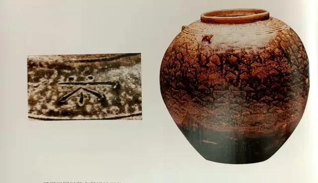
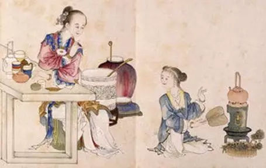

秦汉茶饼煮可食，魏晋茶入百姓家

在秦朝，茶得到了广泛的传播，人们也不再单一的吃茶了，而逐渐当饮品来喝，同时依然作为药用。
秦人喝茶有着非常强烈的时代印记。一说起秦朝，那是一个金戈铁马、豪情万丈的时代，秦人征战天下，扬起风沙遍天，留给后 人一段峥嵘的记忆。秦人的喝茶喜好也如同他们的刚烈性格一般，他们非常喜欢喝浓茶，抓一把茶叶放入茶缸之中，置火上熬煮， 待其色浓若红豆汤，其味涩似柳汁，苦似中药，唯此方合口味，也唯此才能过瘾。秦人喝茶也没有那些精细的茶道茶礼，也不用 那些小杯小盏的精致茶具，大碗，大杯，大口喝茶，这是秦人的粗狂和豪爽。
与前秦茶叶做成羹汤当作食物食用和作为药饮汤剂而非饮品的情况不同，由于茶叶由原来的巴蜀特产进一步传播并使荆楚的湖南 成为重要产茶区，同时，汉代人们对茶叶的药用功能已经有了进一步认识，使茶进入了另一个发展阶段。《三国志》记载了韦曜 以茶代酒的故事。孙皓即位后，每次宴请都是一喝一整天，且要求到场的人无论酒量大小，最少都要喝七升。因重臣韦曜只有两 升的酒量，孙皓特别礼遇他 ，偷偷地赐他茶以代酒。这个故事告诉我们，当时饮用的是茶汤，而不再是将茶叶当菜肴吃了。在 此之后的文献，凡是提到茶，都是和“饮”连在一起了。张揖(227-232 年)的《广雅》是制作饼茶的最早记载，而且具体描述了 饼茶的加工和煮饮方法。当时加工饼茶的原料有老有嫩，嫩茶因内含物质丰富，黏性强，无须添加米膏，而叶老的，为了增强黏 性、改善茶饼外观，要用米膏，这在当时这是比较先进的加工工艺。相应的，茶煮饮的方法也与之前不同：“欲煮茗饮，先炙令 色赤，捣末，置瓷器中，以汤浇覆之，用葱姜、橘子芼之。”这种烹茶法一直延续到唐宋时代，只是“用葱姜、橘子芼之”的做 法在唐宋以后不见记载。
汉代是我国饮茶史上的一个重要阶段。西汉王褒在四川成都与家僮订立的契约《僮约》中规定了家僮的日常事务就有 “烹荼尽具， 已而盖藏”和“牵犬贩鹅，武阳买茶”。武阳即今天四川彭山县，从成都跑到几百里外的彭山县去买茶，可见它不是在附近随时可 得的一般野菜，而是很有名气的茶叶。同时也说明当时已经有了专卖茶叶的茶市和贩卖生意。前秦茶作为菜羹或药饮时，茶具与食 物或药饮用具是混用的。 而汉朝，要在契约中专门规定“烹荼尽具”(煮完茶后要把茶具收拾干净)，说明了当时已经有专门用于 饮茶的茶具，茶具可能不止一两个，是一套，也足见茶具清洗起来是有工作量的、是贵重的。
左思《娇女诗》描写了西晋贵族家庭饮茶的日常：两位天真烂漫的女儿在一直玩耍，口渴了急着要喝茶，只想茶水快点烧开，对着 茶妒用嘴吹火，最后衣袖弄脏了，脸蛋熏黑了，遭到长辈教训，掩泪面壁。这是一首描写居家生活的诗，可见当时喝茶是家常事， 茶已经成为贵族家常饮料。东晋时期，茶已用于建康（今南京）等地的待客，茶已然进入寻常生活之中。在北方，茶有了一定的影 响但尚不普及。据《世说新语》载“任瞻问茶”一事。任瞻年轻时在官场颇有名声，随晋室南渡。一次，他到建康，当时和一些名 士聚会，因他对茶不熟悉，大概只是道听途说了一些关于茶、茗的事，看到有茶上来，便问是茶是茗。他看到大家一脸狐疑后，知 道自己说了外行话。 山东人贾思勰著的农业科学著作《齐民要术》对我国农业产生了深远影响，其中收录了南方才有的茶叶条目， 说明当时茶叶在北方也有了一定的知名度。
有了“茶德尚俭”的思想。《茶经》引《晋书》中两个故事。一个故事说，桓温为扬州牧，性俭，每宴饮、唯设饼、茶果、干饭而 已。另一个故事说，陆纳曾任尚书令，口碑极好，以俭德著称，一次，卫将军谢安到陆纳这里来，陆纳所设唯茶果而已。说明茶在 招待客人方面是内敛的,是不奢华又不失礼节的做法，三国、两晋时期，许多文化、思想与茶相关。玄学一改汉代“儒道互黜”的思 想格局，主张“儒道兼综”，正契合了中国茶道儒、释、道融为一体的精髓。同时，茶超越了它的自然功能的另一个表现是出现了 第一批描写茶叶的诗词歌赋。从西晋开始，茶与思想、茶与文学艺术的结下了不解之缘，茶叶的精神内涵日益显现，茶文化活动已 经萌芽。